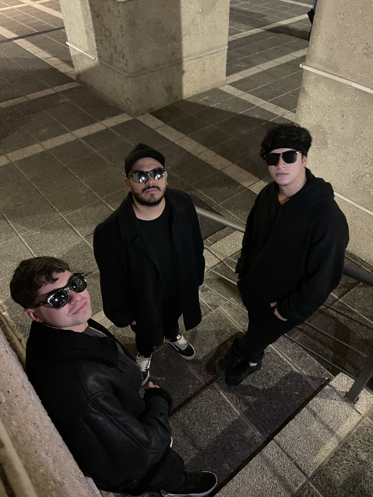
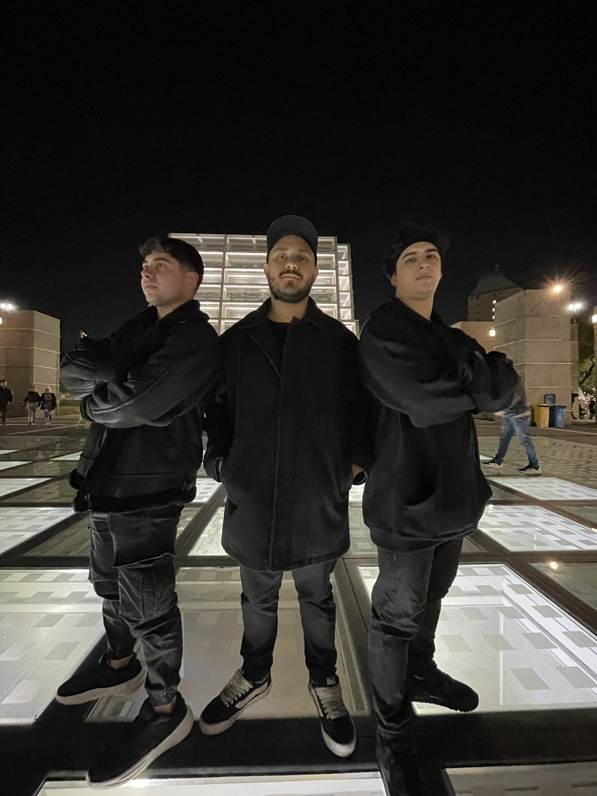
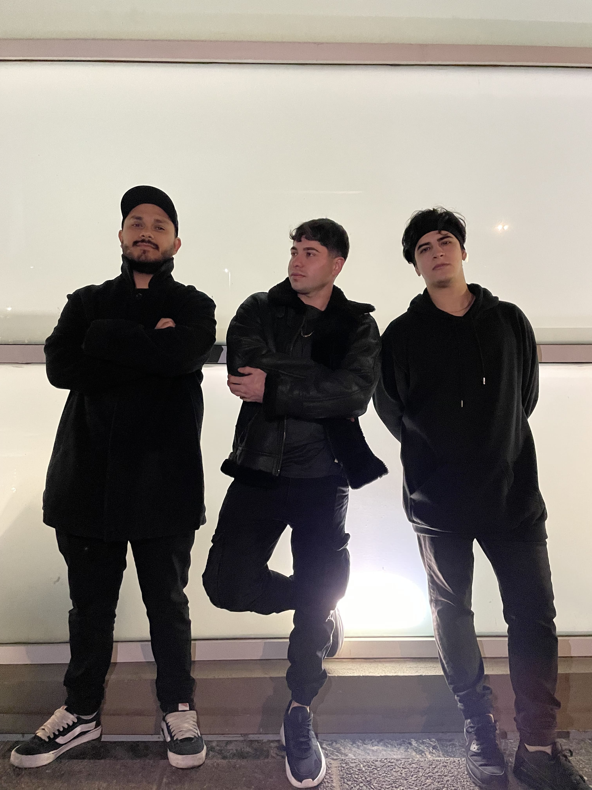
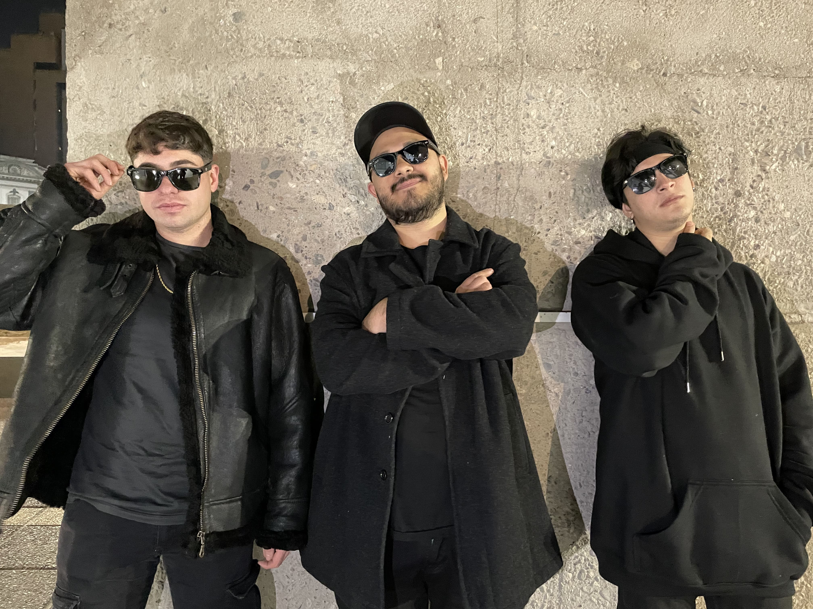

Pergamino es una banda de rock originaria de Córdoba Capital, Argentina, que fusiona influencias de géneros como rock 'n' roll, ska, punk, reggae y rock alternativo. Formada en agosto de 2016, ha sabido plasmar su esencia en dos discos de estudio: Pentagramas Revolucionados (2018/2019) y Lo Bueno por Venir (2022). Su propuesta musical vibrante y diversa los posiciona como una fuerza emergente en la escena del rock nacional.
(Voz y Guitarra)
(Primera Guitarra)
(Bajo)
(Bateria)